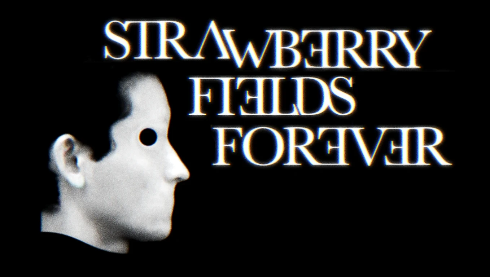

Musique
Strawberry Fields Forever
Reprise et clip
Chanson des Beatles


Une réinterprétation musicale et visuelle de la chanson des Beatles.
Lucky
Reprise et clip
Chanson de Jason Mraz et Colbie Caillat

Une reprise en duo avec Blanche